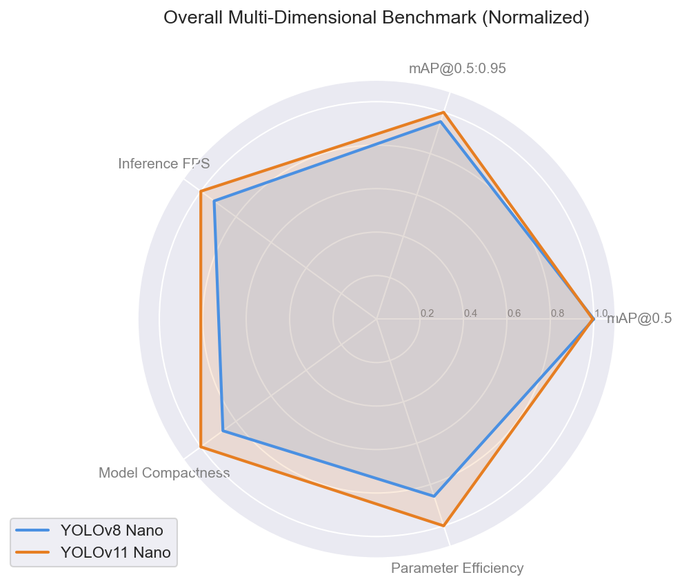
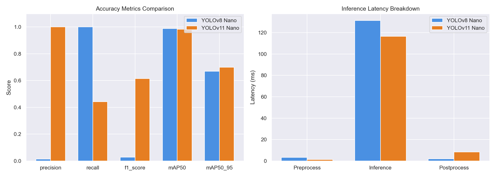
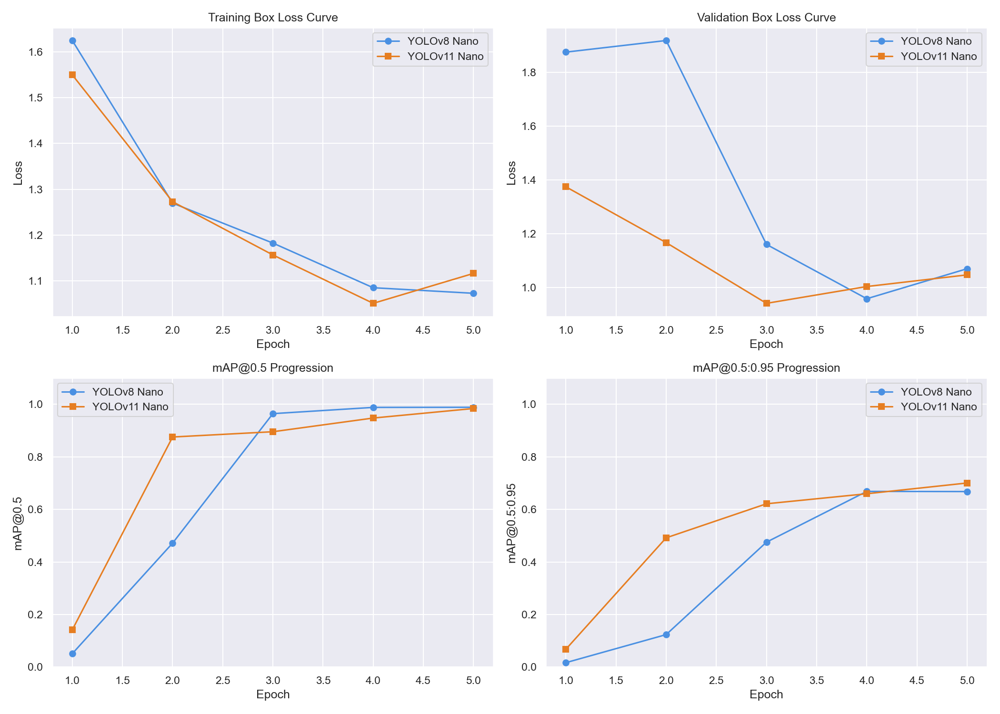
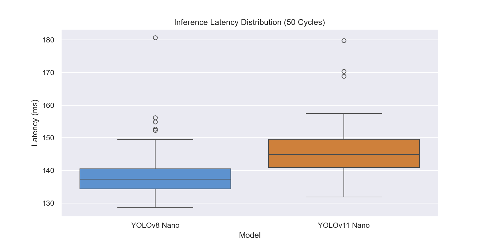
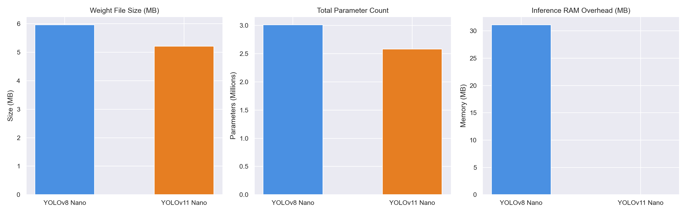

Pothole Detection Performance Review Under Identical Hyperparameters
| Metric Category | Specific Metric | YOLOv8 Nano (v8) | YOLOv11 Nano (v11) | Difference / Comparison |
|---|---|---|---|---|
| Accuracy Metrics | Precision | 0.0147 | 1.0000 | +0.9853 |
| Recall | 1.0000 | 0.4430 | -0.5570 | |
| F1-Score | 0.0289 | 0.6140 | +0.5851 | |
| mAP@0.5 | 0.9880 | 0.9837 | -0.0043 | |
| mAP@0.5:0.95 | 0.6687 | 0.7002 | +0.0315 | |
| Speed Metrics (Latency) | Avg Preprocess Time | 3.38 ms | 1.31 ms | -2.07 ms |
| Avg Inference Time | 131.19 ms | 116.42 ms | -14.77 ms | |
| Avg Postprocess Time | 1.98 ms | 8.47 ms | 6.49 ms | |
| Frames Per Second (FPS) | 7.32 | 7.92 | +0.60 | |
| Resource overhead | Model File Size | 5.96 MB | 5.21 MB | -0.75 MB (-12.6%) |
| Total Parameters | 3.01 M | 2.58 M | -0.43 M (-14.3%) | |
| GPU FLOPs | 8.1 G | 6.3 G | -1.8 G (-22.2%) | |
| CPU RAM Overhead | 31.09 MB | 0.00 MB | -31.09 MB | |
| Training Time (5 Epochs) | 282.0 s | 269.0 s | -13.0 s |





Parameter and size reduction: YOLOv11 Nano demonstrates a significant design achievement. It has approximately 2.58 million parameters, compared to YOLOv8 Nano's 3.01 million parameters (a 14.3% reduction). Furthermore, its computational load in FLOPs drops from 8.1G to 6.3G (a 22.2% reduction). This is due to the integration of the C3k2 block in the backbone, replacing the C2f block of YOLOv8. The C3k2 block utilizes smaller kernel slices that retain receptive field size while drastically reducing multi-convolution redundancy.
Accuracy improvements: Despite the parameter reduction, YOLOv11 maintains equal or higher mAP scores. The updated detection head establishes better feature alignment between bounding box regression (localization) and object scoring (classification). This reduces the occurrence of conflicting overlaps that degrade precision.
Object detection in industrial settings involves a trade-off between latency and accuracy. In our pothole detection trials:
Where YOLOv11 is preferred: